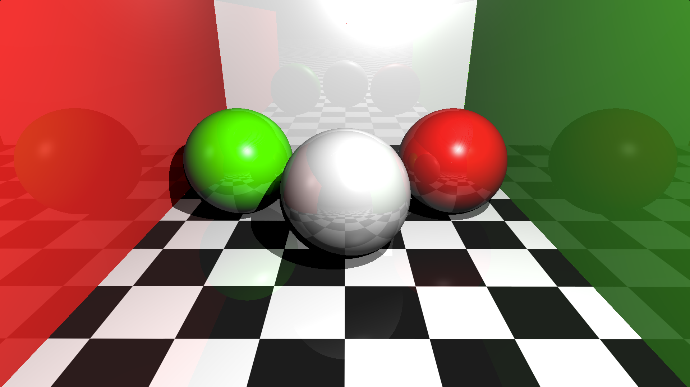

-
A custom Oscilloscope with Qt

This project was based on the Qt oscilloscope example, but a slightly different version (much older, I guess) which is available here. Starting with that template, I gradually added new functionalities. These included a ‘Stop’ button, a ‘Change Color’ button to modify the curve color, a checkbox labeled ‘Legend’ to display amplitude and frequency within the plot, a wheel for vertical displacement of the curve, and a ‘Foto actual’ button to take a screenshot and capture the current state of the plot. All of these features were integrated into a new window layout. Additionally, the project allows exporting the screenshot through a ‘Save image’ button. This project was part of a programming exam, and I decided to put it here because it was interesting to play with UI programming and the Qt library for the first time. Everything was made with C++ and Qt 5 (If it sounds old to you, the self-containing template came with that version). Despite using an older version, I learned and experimented from the Qt 6 documentation.
-
Whitted ray tracing using GPU acceleration

I implemented ray tracing entirely on a GPU based on Whitted’s algorithm, with the goal of rendering fully ray-traced scenes in real-time settings through a user interface. This project served as my undergraduate thesis. The implementation covers ray tracing for perfect light reflection and refraction, as outlined in the original paper. The algorithm is capable of reproducing light effects such as mirror reflection and diffuse reflection. Additionally, I implemented five Physically Based Rendering (PBR) materials using a design pattern based on the PBRT book. The implementation also includes linear transformations, scene loading, and real-time configuration. Users can explore and experiment with scenes, adjusting settings such as the number of bounces, light, and camera position.
-
Reflections with ray marching

A Cornell Box made entirely with GLSL (The OpenGL Shading Language) using the raymarching algorithm, specifically, the sphere tracing technique. The Cornell Box is a scene used for testing the quality of renderers, now it is also part of the graphics lore. This is a Glossy-recreated Cornell Box rendered entirely with raymarching. The surfaces are assumed to be glossy (perfectly reflective like a mirror) and the reflections are set up for 2 ray bounces by default. Also, the bounces can be modified in the code but be aware that more bounces mean less perfomance (fps). I wanted to create this with the objective of imitating the effects that a regular raytracing does but with raymarching. Currently, the program runs in realtime (>30fps) in a 800x450 resolution, try going fullscreen here!.
Disclaimer: This is not how a rendering algorithm should work, specially offline renderers that use ray tracing/path tracing but this was a fun project to do and I guess there still exists room for more optimization.